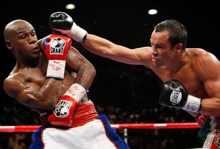
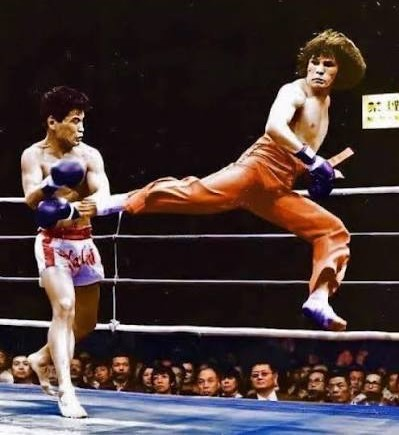

(Clique no nome da guarda para ver um vídeo de sua aplicação!)




Chutes são extremamente poderosos e versáteis. Entretanto, as vezes, quando focamos em nossas pernas, esquecemos de dar a devida atenção às nossas mãos!
Não é sua culpa, chutes são divertidos e legais :)))), para facilitar o uso deles, neste site você verá:
| Postura | Pros | Cons |
|---|---|---|
| Guarda alta |
Simples e funcional, a postura ideal para quem tem pouca expeiência com boxe | Pouco efetiva contra chutes ao corpo se não usada devidamente e suas mãos estão fora de posição para chutar |
| Guarda longa |
Ótima para manter distância e armar/disfarçar chutes | Braços longe do corpo para se defender caso o oponente feche a distância |
| Guarda baixa |
Mãos em posição para chutes rápidos, ótima para movimentação | Rosto muito exposto, não recomendada caso suas esquivas não estejam em dia |
| Philly shell  |
Postura naturalmente lateral para chutes com giro do corpo, ótima defesa em curta distância | Exige muita prática, entendimento dos princípios de boxe e ótimos reflexos |
Quem acabou de ver meu belíssimo site?